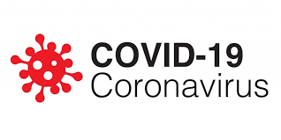
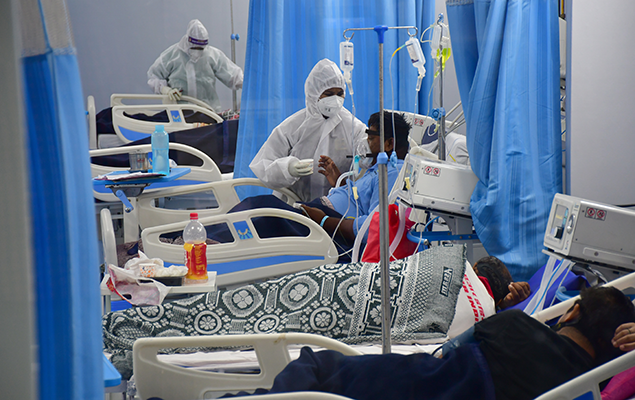
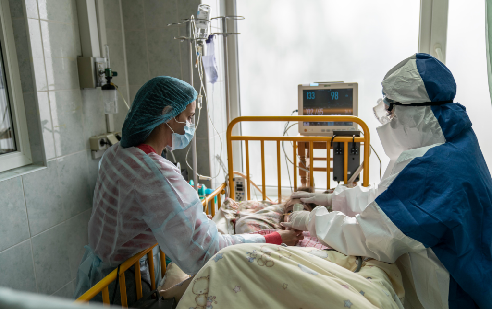
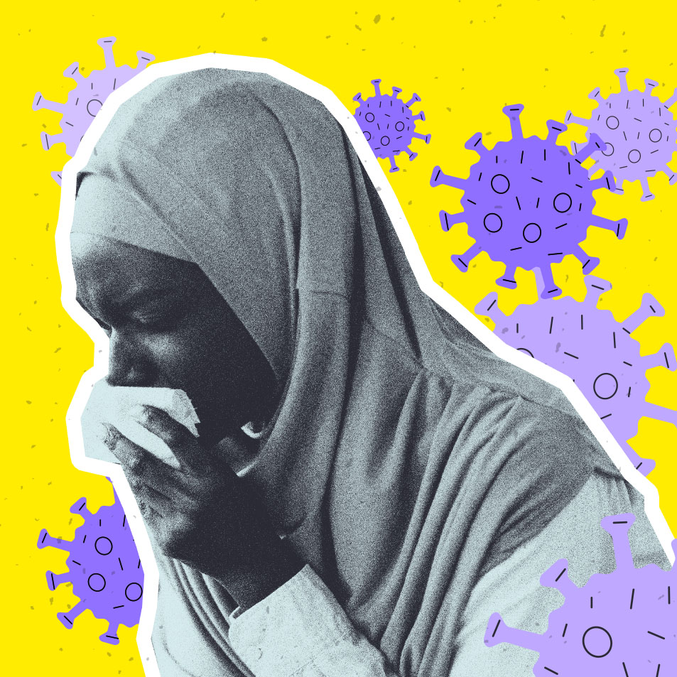

US biotech Moderna announced that it has completed enrollment of 30,000 participants for the phase III COVE study of mRNA-1273, its vaccine candidate against COVID-19, being conducted in collaboration with National Institute of Allergy and Infectious Diseases and the Biomedical Advanced Research and Development Authority.
To date, more than 25,650 participants have received their second vaccination. As of today, the COVE study includes more than 7,000 Americans over the age of 65 and more than 5,000 under the age of 65 with chronic diseases that put them at increased risk of severe COVID-19, such as diabetes, severe obesity and cardiac disease.
The primary endpoint of the trial is the prevention of symptomatic COVID-19 disease. The formal study efficacy analysis will be triggered when 151 of the volunteers have tested positive for COVID-19 infection, with two earlier interim analyses after 53 and 106 cases.
Frequently asked questions about COVID-19 vaccines
What are the different type of COVID-19 vaccines?
There are four types of vaccines in clinical trials: whole virus, protein subunit, viral vector and nucleic acid (RNA and DNA), each of which protects people, but by producing immunity in a slightly different way.
Understanding COVID-19 will help us all to stay safe. Find out more about COVID, and how to protect yourself and your community.
COVID-19 HEALTH INFORMATION




There are four types of COVID-19 vaccines: here’s how they work.
The fight against COVID-19 has seen vaccine development move at record speed, with more than 170 different vaccines in trials. But how are they different from each other and how will they protect us against the disease?
There are more vaccine candidates simultaneously in the pipeline for COVID-19 than ever before for an infectious disease. All of them are trying to achieve the same thing – immunity to the virus, and some might also be able to stop transmission. They do so by stimulating an immune response to an antigen, a molecule found on the virus. In the case of COVID-19, the antigen is typically the characteristic spike protein found on the surface of the virus, which it normally uses to help it invade human cells.
Earlier in 2020, when the pandemic was new, you might have heard that there was more than one strain of the new coronavirus. Is it true? The answer appeared to be yes.
The theory about different variants of the new coronavirus came from a study in China. Researchers were studying changes in coronavirus RNA over time to figure out how various coronaviruses are related to each other. They looked at 103 samples of the new coronavirus collected from people, and they looked at coronaviruses from animals. It turned out that the coronaviruses found in humans weren't all the same.
There were two types, which the researchers called “L” and “S.” They're very similar, with slight differences in two places. It looks like the S type came first. But the scientists say the L type was more common early in the outbreak.